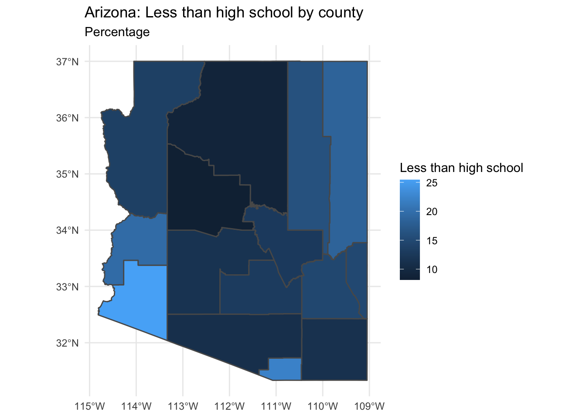

library(tidyverse) # data manipulation
library(tidycensus) # access US Census data
library(sf) # manipulate spatial objectsOverview
In this guide I will provide an overview of how to coordinate US Census demographic information with Twitter status posts collected from the Twitter API that include geolocation information (i.e. latitude and longitude coordinates).
Access to the US Census
The first step is to acquire a US Census API Key. You can do so by following this link. Once you have your API key, you will now want to add it to RStudio –but you want to add it to the R environment, not in a script in your project directory. To do this we can run the tidycensus::census_api_key() function and use your API key as a character vector as the first argument then set install = TRUE.
tidycensus::census_api_key(key = "<your-api-key-here>", install = TRUE)The install = TRUE argument will make this API key available across your RStudio sessions.
Query US Census data
We use the tidycensus package (Walker and Herman 2022) to query the US Census. In particular we will look at querying the American Community Survey (ACS) data which is a rolling survey over 5 years (“acs5”). To make it easier to find the codes for the various variables that the survey provides, we can acess the variables table with the load_variables() function.
acs_5 <-
load_variables(year = 2019, # select last year of 5-year summary
dataset = "acs5", # select the dataset
cache = TRUE) # cache the results (to speed subsequent queries)
View(acs_5) # view in RStudio editor paneAssigning it to an object and then calling View() allows us to peruse the variables and search them with the filter tool in RStudio, as seen in Figure 1.
Figure 1: ACS 5 survey variable codes and descriptions
We use the get_acs() function to pull the demographic information. We can specify the state(s) to query and the type of geography (block, tract, county, state) that we want along with the variable(s) that we want. In addition we can pull the geometry of the geography so we can have the geographic limits of these geographies.
Let’s use the variable B19013_001 which is the median household income in the past 12 months for the counties in Arizona. We will also request the geometry of the counties for graphic visualization.
get_acs() defaults to 2019 ACS 5-year sample.
az_county_sf <-
get_acs(state = "AZ", # state
geography = "county", # census geography
variables = "B19013_001", # median income
geometry = TRUE) # get simple features (sf) geographyLet’s take a look at the structure of the dataset that is returned.
glimpse(az_county_sf) # preview## Rows: 15
## Columns: 6
## $ GEOID <chr> "04027", "04001", "04017", "04013", "04012", "04005", "04021"…
## $ NAME <chr> "Yuma County, Arizona", "Apache County, Arizona", "Navajo Cou…
## $ variable <chr> "B19013_001", "B19013_001", "B19013_001", "B19013_001", "B190…
## $ estimate <dbl> 48790, 33967, 43140, 67799, 34956, 59000, 60968, 46907, 47686…
## $ moe <dbl> 1981, 2108, 2357, 444, 5708, 1900, 1223, 3169, 1355, 3071, 11…
## $ geometry <MULTIPOLYGON [°]> MULTIPOLYGON (((-115 32.5, ..., MULTIPOLYGON (((…This dataset has 15 observations corresponding to the 15 counties in Arizona. The columns include the GEOID, NAME (county name in this case), variable (median income), estimate (median income values), moe (margin of error of the sample), and the geometry.
az_county_sf %>%
slice_head(n = 5)| GEOID | NAME | variable | estimate | moe | geometry |
|---|---|---|---|---|---|
| 04027 | Yuma County, Arizona | B19013_001 | 48790 | 1981 | MULTIPOLYGON (((-115 32.5, … |
| 04001 | Apache County, Arizona | B19013_001 | 33967 | 2108 | MULTIPOLYGON (((-110 37, -1… |
| 04017 | Navajo County, Arizona | B19013_001 | 43140 | 2357 | MULTIPOLYGON (((-111 35, -1… |
| 04013 | Maricopa County, Arizona | B19013_001 | 67799 | 444 | MULTIPOLYGON (((-113 33.6, … |
| 04012 | La Paz County, Arizona | B19013_001 | 34956 | 5708 | MULTIPOLYGON (((-115 33.3, … |
Let’s visualize median income in counties in Arizona with ggplot() and the geom_sf() function.
az_county_sf %>%
ggplot(aes(fill = estimate)) + # mapping
geom_sf() + # plot the county geometries
theme_minimal() + # use a minimal ggplot theme
labs(title = "Arizona: Median income by county",
fill = "Median income") # labels
We can also query multiple states or variables. Let’s look into education which is the B07009 category. The sample total is B07009_001 and the estimate of the sample which have less than a high school education is B07009_002.
az_county_sf <-
get_acs(state = "AZ", # state
geography = "county", # census geography
variables = c("B07009_001", "B07009_002"), # edu: total, < high school
geometry = TRUE) # get simple features (sf) geography
glimpse(az_county_sf) # preview structure## Rows: 30
## Columns: 6
## $ GEOID <chr> "04027", "04027", "04001", "04001", "04017", "04017", "04013"…
## $ NAME <chr> "Yuma County, Arizona", "Yuma County, Arizona", "Apache Count…
## $ variable <chr> "B07009_001", "B07009_002", "B07009_001", "B07009_002", "B070…
## $ estimate <dbl> 134749, 34280, 45607, 8459, 71918, 11620, 2952370, 342904, 16…
## $ moe <dbl> 297, 1420, 109, 410, 76, 609, NA, 5371, 194, 473, 157, 600, 1…
## $ geometry <MULTIPOLYGON [°]> MULTIPOLYGON (((-115 32.5, ..., MULTIPOLYGON (((…In this dataset we have the same columns as before, yet we have double the observations. This is due to the fact that each variable is by default added in tidy format as seen below.
az_county_sf %>%
slice_head(n = 5) # preview data frame| GEOID | NAME | variable | estimate | moe | geometry |
|---|---|---|---|---|---|
| 04027 | Yuma County, Arizona | B07009_001 | 134749 | 297 | MULTIPOLYGON (((-115 32.5, … |
| 04027 | Yuma County, Arizona | B07009_002 | 34280 | 1420 | MULTIPOLYGON (((-115 32.5, … |
| 04001 | Apache County, Arizona | B07009_001 | 45607 | 109 | MULTIPOLYGON (((-110 37, -1… |
| 04001 | Apache County, Arizona | B07009_002 | 8459 | 410 | MULTIPOLYGON (((-110 37, -1… |
| 04017 | Navajo County, Arizona | B07009_001 | 71918 | 76 | MULTIPOLYGON (((-111 35, -1… |
For variables in which we want may want to compare the particular variable to the variable’s total estimate to get a percentage, it is often better to have the data in wide format. We can run a similar query and add the argument output = "wide".
az_county_sf <-
get_acs(state = "AZ", # state
geography = "county", # census geography
variables = c("B07009_001", "B07009_002"), # edu: total, < high school
geometry = TRUE, # get simple features (sf) geography
output = "wide") # get wide output
glimpse(az_county_sf) # preview structure## Rows: 15
## Columns: 7
## $ GEOID <chr> "04027", "04001", "04017", "04013", "04012", "04005", "040…
## $ NAME <chr> "Yuma County, Arizona", "Apache County, Arizona", "Navajo …
## $ B07009_001E <dbl> 134749, 45607, 71918, 2952370, 16600, 84314, 311415, 39740…
## $ B07009_001M <dbl> 297, 109, 76, NA, 194, 157, 128, 39, 130, 105, 131, 123, 1…
## $ B07009_002E <dbl> 34280, 8459, 11620, 342904, 3245, 7597, 40308, 5063, 22045…
## $ B07009_002M <dbl> 1420, 410, 609, 5371, 473, 600, 1602, 577, 1325, 389, 913,…
## $ geometry <MULTIPOLYGON [°]> MULTIPOLYGON (((-115 32.5, ..., MULTIPOLYGON …In this dataset we have the same number of observations, but additional columns. The estimate (E) and the margin of error (M) appear for each variable.
az_county_sf %>%
slice_head(n = 5) # preview data frame| GEOID | NAME | B07009_001E | B07009_001M | B07009_002E | B07009_002M | geometry |
|---|---|---|---|---|---|---|
| 04027 | Yuma County, Arizona | 134749 | 297 | 34280 | 1420 | MULTIPOLYGON (((-115 32.5, … |
| 04001 | Apache County, Arizona | 45607 | 109 | 8459 | 410 | MULTIPOLYGON (((-110 37, -1… |
| 04017 | Navajo County, Arizona | 71918 | 76 | 11620 | 609 | MULTIPOLYGON (((-111 35, -1… |
| 04013 | Maricopa County, Arizona | 2952370 | NA | 342904 | 5371 | MULTIPOLYGON (((-113 33.6, … |
| 04012 | La Paz County, Arizona | 16600 | 194 | 3245 | 473 | MULTIPOLYGON (((-115 33.3, … |
Now with the multiple variables for education in wide format we can use the total estimate (B07009_001E) and the less than high school estimate (B07009_002E) to create a percentage of the county’s population with less than a high school education. We use our data manipulation skills to do this. I will use the mutate() to calculate the percentage and add it to our data frame.
az_county_sf <-
az_county_sf %>%
mutate(perc_less_hs = (B07009_002E / B07009_001E) * 100) # calculate percent of county with less than high school edu
az_county_sf %>%
select(!ends_with("M")) %>% # filter out margin of error columns
slice_head(n = 5) # preview| GEOID | NAME | B07009_001E | B07009_002E | perc_less_hs | geometry |
|---|---|---|---|---|---|
| 04027 | Yuma County, Arizona | 134749 | 34280 | 25.4 | MULTIPOLYGON (((-115 32.5, … |
| 04001 | Apache County, Arizona | 45607 | 8459 | 18.5 | MULTIPOLYGON (((-110 37, -1… |
| 04017 | Navajo County, Arizona | 71918 | 11620 | 16.2 | MULTIPOLYGON (((-111 35, -1… |
| 04013 | Maricopa County, Arizona | 2952370 | 342904 | 11.6 | MULTIPOLYGON (((-113 33.6, … |
| 04012 | La Paz County, Arizona | 16600 | 3245 | 19.5 | MULTIPOLYGON (((-115 33.3, … |
And again we can visualize this information with ggplot().
az_county_sf %>%
ggplot(aes(fill = perc_less_hs)) + # mapping
geom_sf() + # plot the county geometries
theme_minimal() + # use a minimal ggplot theme
labs(title = "Arizona: Less than high school by county",
subtitle = "Percentage",
fill = "Less than high school") # labels
Now let’s look at how to join the information from the US Census with Twitter status posts (tweets) with geolocation information (i.e. latitude and longitude coordinates).
Orientation
As an example, I will read in a dataset collected from the Twitter API via rtweet (Kearney 2020). The collection includes various regionalisms (faucet, spigot, frying pan, skillet, pail, bucket, coke, pop, soda, you guys, yall). We will focus on the terms “y’all” (and “yall”) and “you guys”. I will also remove all tweets with no geolocation coordinate information.
typ_df <-
read_csv(file = "guide_2/data/derived/tusr_curated.csv") %>% # read dataset
mutate(user_id = as.character(user_id), # convert to character
status_id = as.character(status_id)) %>% # convert to character
filter(search_term %in% c("yall", "you guys")) %>% # only keep you plural search terms
mutate(search_term = factor(search_term)) %>% # make search term a factor
filter(lat != "") # remove tweets with no geolocation information
glimpse(typ_df) # preview## Rows: 3,018
## Columns: 6
## $ user_id <chr> "29038175", "191434404", "1383299286373265408", "127876171…
## $ status_id <chr> "1452684447824887808", "1452684402715201536", "14526843251…
## $ search_term <fct> you guys, you guys, you guys, you guys, you guys, you guys…
## $ text <chr> "@WingfieldNFL @ckparrot Can you guys tell Grier and Co, s…
## $ lat <dbl> 41.8, 43.6, 45.1, 43.0, 49.9, 49.9, 41.8, 41.8, 41.8, 33.9…
## $ lng <dbl> -71.4, -79.3, -93.3, -80.6, -97.2, -97.2, -72.8, -72.8, -7…We have 3018 observations and 6 variables.
Now let’s take a look at the data dictionary for this dataset.
| variable_name | name | description |
|---|---|---|
| user_id | User ID | Twitter user id |
| status_id | Tweet ID | ID for specific tweet |
| search_term | Search Term | Term used to collect this tweet |
| text | Tweet Text | Tweet text in status post |
| lat | Latitude | Latitude coordinate (if geoenabled) |
| lng | Longitude | Longitude coordinate (if geoenabled) |
Since we have geolocation coordinates, we can map these using ggplot() with a base map from the map_data() function.
states_map <- map_data("state") # get US map of states
p <- ggplot() + # base plot
geom_polygon(data = states_map, # map data
aes(x = long, y = lat, group = group), fill = "white", color = "black") + # set background/ lines
labs(title = "Tweets in the USA", subtitle = "Regional terms") + # labels
theme_minimal()
p + # add to previous base plot
geom_point(data = typ_df, # tweet data with lat and lng coordinates and languages
aes(x = lng, y = lat, group = 1, color = search_term), # map lat and lng and color for language names
alpha = 1/4, size = 1.5) + # transparency and size of points
labs(color = "Regional terms") # labels
Trends towards “Y’all” in the South and eastern metropolitan areas. “You guys” is interspersed with “Y’all” to some degree but appears to be more common in the Mid-West and northern states.
The overlap appears to be quite extensive in some states. Let’s look at California in particular and explore how we can associate demographic variables with the tweets emanating from tracts (sub-divisions of counties) in this state.
US Census
Let’s pull the demographic estimates for median income, as an example, for all the tracts in California.
ca_tract_sf <-
get_acs(state = "CA", # state
geography = "tract", # census geography
variables = c("B19013_001"), # median income
geometry = TRUE) # get simple features (sf) geography
glimpse(ca_tract_sf) # preview ACS tracts for CA## Rows: 9,129
## Columns: 6
## $ GEOID <chr> "06077005127", "06077003406", "06077004402", "06077005124", "…
## $ NAME <chr> "Census Tract 51.27, San Joaquin County, California", "Census…
## $ variable <chr> "B19013_001", "B19013_001", "B19013_001", "B19013_001", "B190…
## $ estimate <dbl> 87125, 33750, 65850, 54034, 31098, 55956, 54754, 46696, 88897…
## $ moe <dbl> 15157, 6659, 8817, 6463, 6802, 14313, 6871, 9628, 13887, 1033…
## $ geometry <MULTIPOLYGON [°]> MULTIPOLYGON (((-121 37.8, ..., MULTIPOLYGON (((…The dataset has 9129 observations corresponding to the number of tracts in California and 6 columns –the same we saw earlier for the single variable, tidy version of the ACS query.
For fun, let’s plot the census information for tract median income in California.
ca_tract_sf %>%
ggplot(aes(fill = estimate)) + # mapping
geom_sf() + # plot the county geometries
theme_minimal() + # use a minimal ggplot theme
labs(title = "California: Median income by tract",
fill = "Median income") # labels
Now let’s add the appropriate CRS (coordinate reference system) scheme to the lng and lat variables in the tweet dataset (typ_df). We use the st_as_sf() function to do this. ‘sf’ stands for spatial features object and we map the lng and lat to coords and set the crs to the CRS of the ca_tract_sf object.
typ_sf <-
typ_df %>% # original dataset
st_as_sf(coords = c("lng", "lat"), # map x/long, y/lat values to coords
crs = st_crs(ca_tract_sf)) # align coordinate reference systems
glimpse(typ_sf) # preview## Rows: 3,018
## Columns: 5
## $ user_id <chr> "29038175", "191434404", "1383299286373265408", "127876171…
## $ status_id <chr> "1452684447824887808", "1452684402715201536", "14526843251…
## $ search_term <fct> you guys, you guys, you guys, you guys, you guys, you guys…
## $ text <chr> "@WingfieldNFL @ckparrot Can you guys tell Grier and Co, s…
## $ geometry <POINT [°]> POINT (-71.4 41.8), POINT (-79.3 43.6), POINT (-93.3…We now see that our data frame has converted the latitude and longitude to a geometry vector. We can now use the st_join() function to associate those geolocation points from our tweet data with the demographic information from the US Census.
typ_census_sf <- st_join(typ_sf, ca_tract_sf) # join tweets and census by geometry
glimpse(typ_census_sf) # preview## Rows: 3,018
## Columns: 10
## $ user_id <chr> "29038175", "191434404", "1383299286373265408", "127876171…
## $ status_id <chr> "1452684447824887808", "1452684402715201536", "14526843251…
## $ search_term <fct> you guys, you guys, you guys, you guys, you guys, you guys…
## $ text <chr> "@WingfieldNFL @ckparrot Can you guys tell Grier and Co, s…
## $ geometry <POINT [°]> POINT (-71.4 41.8), POINT (-79.3 43.6), POINT (-93.3…
## $ GEOID <chr> NA, NA, NA, NA, NA, NA, NA, NA, NA, "06037650502", NA, NA,…
## $ NAME <chr> NA, NA, NA, NA, NA, NA, NA, NA, NA, "Census Tract 6505.02,…
## $ variable <chr> NA, NA, NA, NA, NA, NA, NA, NA, NA, "B19013_001", NA, NA, …
## $ estimate <dbl> NA, NA, NA, NA, NA, NA, NA, NA, NA, 122240, NA, NA, NA, NA…
## $ moe <dbl> NA, NA, NA, NA, NA, NA, NA, NA, NA, 13636, NA, NA, NA, NA,…We have combined the tweets and census data resulting in 3018 observations. Notice, however, that there are various observations with NA values. These are tweets that do not emanate from within California. So we can eliminate them from the dataset for our purposes here.
typ_census_ca_sf <- typ_census_sf %>%
filter(GEOID != "") # keep observations with GEOIDs
glimpse(typ_census_ca_sf) # preview## Rows: 344
## Columns: 10
## $ user_id <chr> "1087968900", "15723895", "38469445", "61715298", "4398000…
## $ status_id <chr> "1452683638881984512", "1452677571825467392", "14526762309…
## $ search_term <fct> you guys, you guys, you guys, you guys, you guys, you guys…
## $ text <chr> "@melissawisz @StevieLynnne @delanieewisz @wiszrealestate …
## $ geometry <POINT [°]> POINT (-118 33.9), POINT (-118 34), POINT (-118 34),…
## $ GEOID <chr> "06037650502", "06037271803", "06037271803", "06059088801"…
## $ NAME <chr> "Census Tract 6505.02, Los Angeles County, California", "C…
## $ variable <chr> "B19013_001", "B19013_001", "B19013_001", "B19013_001", "B…
## $ estimate <dbl> 122240, 83226, 83226, 62273, 83226, 132950, 83226, 155074,…
## $ moe <dbl> 13636, 6367, 6367, 10934, 6367, 27282, 6367, 96400, NA, 17…After filtering out tweets not originating from California we now have 344 observations.